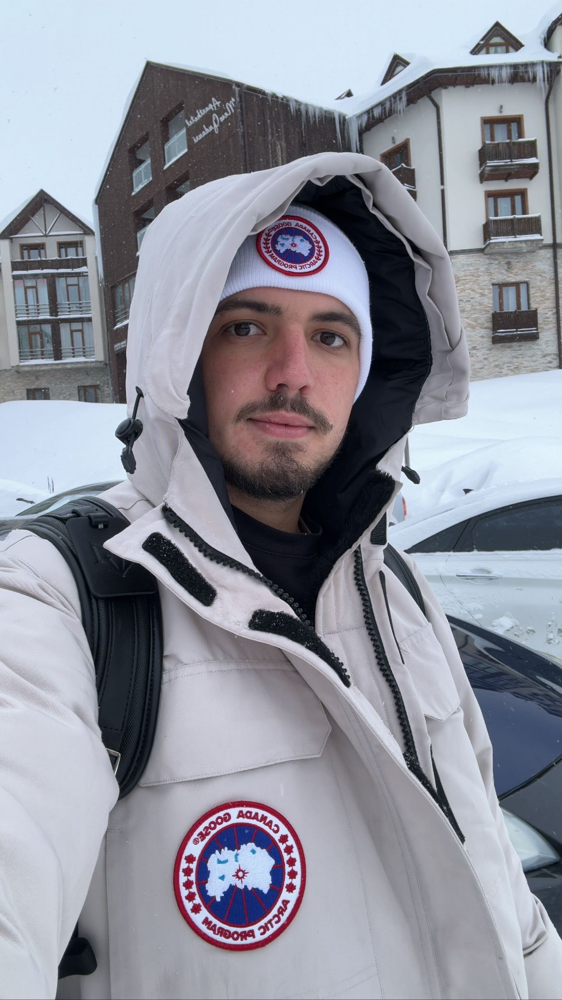

ליווי אישי מלא — מהחלום עד המפתח
גדעון בריטבסקי, 4+ שנים בגודאורי, 20+ עסקאות מלוות. ישראלי שגר, פועל ומכיר כל פינה ב-New Gudauri.

גם אתה פעם ישבת, ראית תמונות של גודאורי בחורף — וחשבת לעצמך: "רגע. יש כאן משהו."
אני הייתי שם בדיוק. אותן שאלות, אותן ספקות. ההבדל היחיד? החלטתי להישאר.
היום אני חי על הקו. לא תייר שביקר. לא מתווך שמוכר מהמשרד. מספיק ישראלי כדי להבין מה מפחיד אותך — ומספיק מקומי כדי לדעת מה לחפש, ממה להתרחק, ואיפה הכסף האמיתי נמצא.
מאז ליוויתי עשרות משפחות ישראליות. הנכסים שלהם עובדים. הם ישנים בשקט. זה מה שאני רוצה גם בשבילך.
בזמן שמחירי הנדל״ן בישראל ובאירופה הגיעו לתקרה, גאורגיה מציעה שוק צומח עם כניסה נגישה ותשואות גבוהות.
גאורגיה היא אחת המדינות הבודדות בעולם שמאפשרות לזרים לרכוש נדל״ן ללא מס רכישה. מה שמשלמים בישראל בעשרות אלפי שקלים — לא קיים כאן.
בישראל, מס הרכישה על דירה שנייה להשקעה מתחיל מ-8% ועולה עד 10% — על דירה של מיליון שקל זה 80,000–100,000 ₪ ישר לפח. בגאורגיה, ללא קשר לאזרחות, מס הרכישה על נכס מגורי הוא 0%.
ב-5 השנים האחרונות ערך הנכסים ב-New Gudauri עלה בכ-30–40%. הביקוש מהמשקיעים הרוסים, הישראלים והמזרח אירופים ממשיך לדחוף את המחירים.
New Gudauri היא עיר-נופש חדשה שנמצאת בשלבי פיתוח מואץ. הנכסים שנרכשו ב-2019–2020 בממוצע של $700–$900 למ״ר, נסחרים כיום ב-$1,100–$1,500 — עלייה של 35–60% תלוי במיקום ובמפתח.
עונת סקי בחורף + תיירות טבע בקיץ = 365 ימי הכנסה פוטנציאלית. תשואת שכירות שנתית ב-New Gudauri נעה בין 8% ל-20% תלוי בנכס וניהול.
דירת סטודיו ממוצעת ב-New Gudauri מניבה $80–$150 ללילה בעונת הסקי (דצמבר–מרץ). בקיץ — $40–$80 ללילה לתיירי הרים וטבע. עם ניהול נכון, ניצולת של 65–75% בשנה היא ריאלית לחלוטין.
נכסים ב-New Gudauri מתחילים מ-$40,000. הליך הרכישה פשוט וניתן להשלים אותו תוך שבועות ספורים — אפילו מרחוק, ללא טיסה לגאורגיה.
בניגוד לספרד, פורטוגל או קפריסין — לא צריך להגיע פיזית לגאורגיה כדי לרכוש נכס. ייפוי כוח נוטריוני מספיק כדי שגדעון ינהל את התהליך כולו בשמך מגודאורי עצמה.
גודאורי הפכה ליעד מועדף על ישראלים — קהילה, מוכרים עברית, ומידע זמין. זה מקל על ההשקעה ומבטיח שוכרים ישראלים לאורך העונה.
בעונת הסקי, שמיעת עברית ברחובות גודאורי היא שגרה. ישראלים שוכרים דירות, נכנסים לבתי קפה, קונים שיעורי סקי — וחוזרים שנה אחר שנה. כמשקיע, זה אומר ביקוש קבוע מבסיס לקוחות שאתה מכיר.
גאורגיה דורגה #7 בעולם במדד "עסקים קלים" של הבנק העולמי. אין הגבלות על הבעלות הזרה, רישום בעלות מהיר ומלא, ומשפט הנכסים ברור ומוגן.
גאורגיה אינה חברת האיחוד האירופי — אבל זה לטובתך. הרגולציה הגמישה, מיסוי נמוך (מס חברות 15%, מס הכנסה 20%), ויחס ממשלתי חיובי לזרים הפכו אותה לאחת מהמדינות המומלצות ביותר להשקעות נדל״ן בעולם.
כל מה שצריך כדי להשקיע נכון — תחת קורת גג אחת, בשפה שלך.
לא מרשימה כללית — ממוקד לפרופיל שלך. מנתח את התקציב, מטרת ההשקעה (שכירות / עליית ערך / שימוש עצמי), ומציג רק נכסים שעומדים בקריטריונים האמיתיים. כולל ביקורים פיזיים בנכסים עם דיווח מפורט, תמונות ווידאו.
ייעוץ אישי מלאלאחר הרכישה — הנכס עובד בשבילך. מוצאים שוכרים, מנהלים צ׳ק אין/אאוט, מטפלים בתקלות, מדווחים על הכנסות ומעבירים כסף לחשבון שלך. אתה יושב בישראל, הנכס מכניס.
מהיום הראשוןעבודה עם עורכי דין גאורגים מוכרים ומנוסים בעסקאות בינלאומיות. ליווי בחוזה, בדיקת בעלות ורישום, העברת בעלות — כל שלב מוסבר בעברית ומאושר על ידך לפני ביצוע.
עם עורך דין מקומיעוזר להבין מה ריאלי — לא מה שרצית לשמוע. ניתוח תשואה צפויה, מסלולי מימון, מינוף אפשרי, תכנון מס. כדי שתיכנס לעסקה עם עיניים פקוחות לחלוטין.
תכנון פיננסי מלאמכירים, מבינים את הצרכים שלך, עונים על כל השאלות. מה התקציב? מה המטרה? מה הציפיות? בסוף השיחה — יש לך תמונה ברורה של מה אפשרי.
מציג נכסים שמתאימים לפרופיל שלך — עם תמונות, וידאו, מידות, מצב ומחיר ריאלי. ניתן לטוס לגודאורי לסיור אישי — ממליץ על כך בחום — אבל לא חובה.
מנהל את המשא ומתן מולך, מוודא שהמחיר הגיוני ביחס לשוק, בודק היסטוריית הנכס ומסמכי בעלות. לא ממהרים — מוודאים שהכל תקין.
עורך דין גאורגי מוכר מכין חוזה, מסביר כל סעיף בעברית, מעביר את הבעלות ורושם על שמך. אפשר לחתום גם מישראל — בייפוי כוח (בתוספת תשלום).
הנכס מוכן — עכשיו מתחיל הניהול. מפרסמים, מוצאים שוכרים, מנהלים, מדווחים. הנכס שלך עובד. אתה בישראל.
שיחת ייעוץ ראשונית — ללא עלות, ללא התחייבות. 30 דקות שיתנו לך תמונה ברורה של מה אפשרי עבורך בגודאורי.